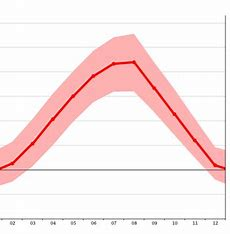
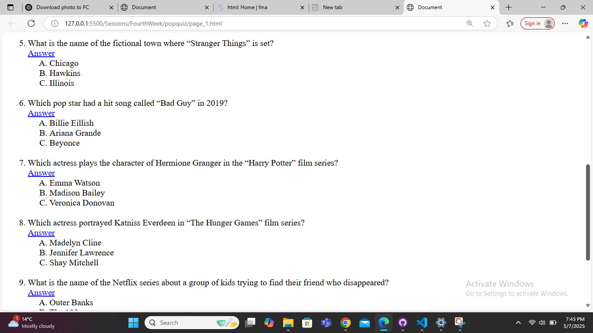
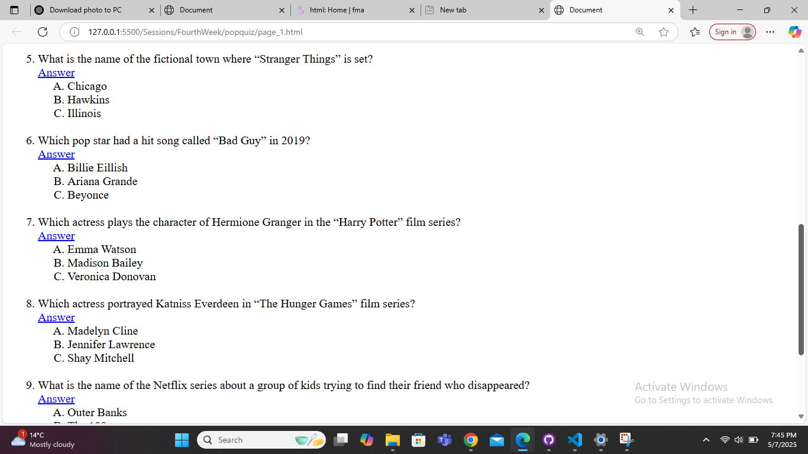

Average Temperatures in Kosovo

⛅ Average Annual Temperatures
Overall Average: Approximately 9.5°C
Warmest Month: July, with an average temperature of 19.2°C
Coldest Month: January, with an average temperature of -1.3°C
📍 Regional Climate Variations
Pristina (Capital)
Annual Average Temperature: Around 17.8°C
July Average: 29.1°C
January Average: 3.7°C
Prizren (Southern Kosovo)
Annual Average Temperature: Approximately 12.9°C
July Average: 23.7°C
January Average: 1.4°C
Mitrovica (Northern Kosovo)
Annual Average Temperature: Around 10.6°C
July Average: 21.5°C
January Average: -0.7°C
Peja (Western Kosovo)
Annual Average Temperature: Approximately 11.3°C
July Average: 22.2°C
January Average: 0.1°C

 
